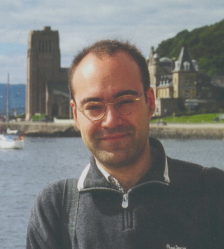

http://members.tripod.com/csound/
gelida@intercom.es
Born 1973 Gelida (Barcelona - SPAIN)
Degrees in Piano, Composition, Choir Conducting, Chamber Music in CSMMB (Barcelona Conservatorium)
Postraduate in Piano at London
Csounding since 1994
Some electroacustic works in my student years.
A electroacustic soundtrack for the amateur movie "el hombre importante" (b/w, 1935)
Given Csound course in La Salle Bonanova (EE University at Barcelona)
Teaching Piano and Computer Music at Igualada Conservatorium (near Barcelona)
Josep M Comajuncosas
C/ Circumval.lacio 75 08790 Gelida - Penedes
Catalunya - SPAIN